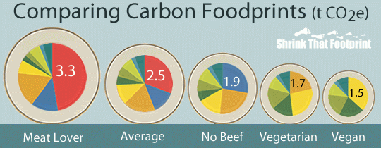

My journey - after taking Environ 208 (business & the environment) and studying different companies' impacts on the environments I decided to change my diet to lower my ecological footprint. Ecological footprint is the measure of human impact on Earth’s ecosystem. The meat industry is a huge contributor to CO2 in the atmosphere which causes global warming, so cutting meat out of my diet was a really easy way to reduce my CO2 emissions.
As a pescatraian I only eat fish. I chose to start as a pescatarian because I wanted to make sure I had enough protein in my diet during this transition. Here are some examples of what I eat on a daily basis!
- Tofu
- Peanut & nut butter
- Eggs
- Chickpeas & hummus
Ecological footprint depending on diet:
